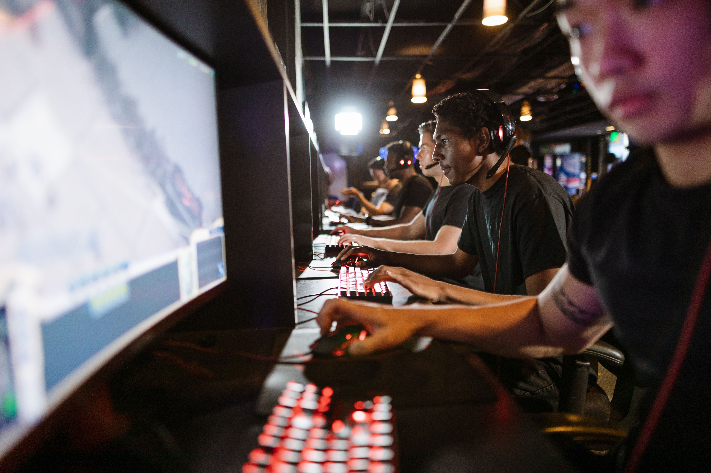

PESQUISA DE APLICAÇÃO
ENTENDENDO O
PÚBLICO GAMER
Para desenvolver o Happy Game, buscamos compreender melhor o comportamento dos jogadores, suas necessidades e a forma como acompanham seu desempenho dentro dos jogos.
Objetivo da Pesquisa
A pesquisa foi realizada com o objetivo de identificar informações relevantes sobre o público gamer e entender quais recursos poderiam ser úteis para jogadores que desejam acompanhar seu desempenho.
A partir dos dados coletados, buscamos compreender os hábitos dos jogadores e identificar oportunidades para desenvolver uma solução que reúna informações importantes sobre suas partidas e evolução.

Dados da Pesquisa
Foram levantados dados sobre o número de jogadores, as plataformas utilizadas e a faixa etária do público gamer, permitindo compreender melhor o perfil dos jogadores no cenário mundial.
| Plataforma | Faixa etária | Porcentagem % |
|---|---|---|
| Mobile | 16-24 anos | 14% |
| Computador/Laptop | 25-34 anos | 26% |
| Console | 35-44 anos | 23% |
| VR | 45-64 anos | 12% |
| Outro Hardware | 55-64 anos | 12% |
Conclusão da Pesquisa
A pesquisa permitiu compreender melhor o perfil dos jogadores no cenário mundial, considerando as principais plataformas utilizadas e as diferentes faixas etárias. Os dados mostram que o público gamer é diversificado e está presente em diferentes plataformas, com destaque para o mobile, utilizado por 55% dos jogadores pesquisados.
Com essas informações, foi possível identificar características importantes do público e utilizá-las como base para o desenvolvimento do Happy Game, que tem como proposta reunir estatísticas e informações de desempenho dos jogadores em um único ambiente.